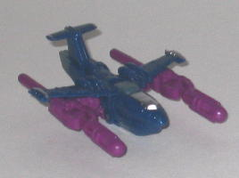

Deepdive
Deepdive
Difficulty of Transformation : Very Easy
Color Scheme : Gray, metallic teal, and some red and dark fuchsia
Individual Rating : 5.9
Giant
Planet Team
Allegiance
: Minicon
Size
: Mini-Con (3-pack)
Homeworld
: Giant Planet (duh)
Overall Rating
: 6.7
Deepdive
Difficulty of Transformation
: Very
Easy
Color Scheme
: Gray, metallic teal,
and some red and dark fuchsia
Individual Rating
: 5.9
Deepdive's vehicle mode
is a submarine-- the first time this vehicle has been used as a TF in a
looong time. This mode would be very good even for a larger toy, much less
a Minicon. There is absolutely no robot kibble whatsoever (even on the
underside!), and the only real sign that it transforms into a robot at
all are the unavoidable lines in the mode that denote seperate plastic
pieces. The robot head does form part of this mode, but the painted visor
and face is well-hidden, and it's disguised so well with the surrounding
parts that it's not obvious at all that it's the head. The detailing on
this toy is also very good, with little rivets everywhere, as well as several
pipes and the like molded in the appropriate places. The mode is almost
entirely gray, but the red detailing on the top and the very watery, jagged
stripes of metallic teal detaling on the sides keep the mode from being
dull. (Deepdive's Minicon symbol is on the side of this mode as well--
on the left side, near the center, to be exact.) In addition to having
a Minicon port on the bottom side of this mode, slightly to the rear of
center, Deepdive also has a Powerlinx port on the top side, in case you
want to "land" Overcast on him or something like that.
Deepdive's robot mode,
however, is pretty awkward. The most obvious oddity is that his upper arms
are HUGE proportionally, extending up well past his actual head, and his
lower arms are pretty tiny, with fists molded on the inside of the submarine
parts that form said lower arms. The lower legs are also ridicuously wide
when compared to the skinny upper legs, and the wide feet are too big as
well. On the other hand, it has been brought to my attention by a few other
Transfans that this design may have been intentional-- Deepdive's robot
mode looks somewhat similar to Divedive, a submarine robot from the '80s
show Go-Bots! The actual core body looks pretty good, however, with the
main top structure of the submarine making a nice chest, and the robot
head looks fittingly somewhat like deep-sea-diver's mask. Deepdive's articulation
is about average for a Minicon-- he can move at the shoulders, elbows,
hips, and knees, and the shoulders and knees are on ball joints for a little
extra movement.
Deepdive has one of
the best, most detailed alt modes out of any Minicon, but this is mostly
negated by his horribly-proportioned robot mode. My least favorite out
of the Giant Planet Minicons.
Longarm
Difficulty of Transformation
: Very
Easy
Color Scheme
: Light leafy green,
dark fuchsia, and some silver, dull milky greenish blue, very dark bluish
green, red, and metallic black
Individual Rating
: 6.7
Longarm's vehicle mode
is a two-armed, slightly futuristic crane. It's futuristic in the sense
that I've never seen a crane arm that has a claw like that, though the
rear crane arm has a more traditional hook molded into it (it should be
noted, however, that the hook is closed off into a circle by a bit of plastic,
given its small size-- thus, it can't actually hook onto a piece of string
or anything). Both crane arms can rotate at the base, and can also move
up and down at a spot near the base. The proportions to this mode are pretty
solid, with no real annoying robot extras, though the little black patches
of detailing near the front of the vehicle make it pretty obvious that
the front third of the vehicle forms the robot feet. The middle third of
this mode has a "belly" much closer to the ground than the other two thirds,
though this is mostly because of the Minicon port on the underside of that
part. Longarm's got plenty of mold detailing all over his body, such as
rivets and hinges, and has a fair amount of paint detailing as well, so
no problems there. The traditional "G1 Constructicon" color scheme of purple
and light green looks as great as it always has on Longarm, so no problems
with the colors either, and the secondary colors of black, red, and to
a lesser extent silver offer a nice contrast to the light green as well.
(Also, in case you're wondering, Longarm's Minicon symbol is molded on
the left side of this mode, behind the molded-in cockpit door.)
Longarm's robot mode
has an interesting transformation that involved splitting the rear two-thirds
of his vehicle mode in half while straighting out the front third to become
the legs. For the most part, this mode looks fairly good-- the square body
and relatively small head helps to give Longarm a "buff littl' guy" look,
and the leg proportions are good enough, though I could have done without
the overly-large knee flaps. The main problem I have with this mode are
the arms, which are made up of the vehicle mode's two crane arms-- they
simply look too skinny compared to the bulky body. The right arm, the hook-arm,
doesn't even look much like an arm at all, and both arms have no elbow
articulation whatsoever, they can only move near the shoulders. (Longarm's
other articulation involves back-and-forth movement at the hips and knees,
as well as waist rotation.)
Longarm's color scheme
is very fitting and a nice G1-homage, and his vehicle mode is unique, with
only a few minor flaws. His robot mode arms are his main downside, as they
look really odd and one barely even looks like an arm. Still, overall,
he's slightly above-average for a Minicon.
Overcast

Difficulty of Transformation
: Easy
Color Scheme
: Dark navy blue, dark
fuchsia, and some silver, red, and dull milky greenish blue
Individual Rating
: 7.4
Overcast's vehicle mode
is an airplane, similar in style to
Cybertron
Jetfire
. It does have a noticeably larger underside, likely due to
the much smaller size of the toy, and to allow it to lie flat on a surface
with enough clearance for the wing-mounted push missile launchers. This
mode is pretty solid, with generally good proportions and only a few, very
minor, robot extras-- namely, the upper robot arms underneath the wings
and the tips of the feet on the back end of the plane. (The upper legs,
given their different color, are also fairly obvious from a side view,
but they fit into the overall shape of the plane.) Like the other Giant
Planet figures, Overcast has more then enough mold detailing to go around,
including little "rivets" and panel lines all throughout his structure.
The teeny tiny wing turbines are especially well-done. His paint detailing
is a tad more scarce when compared to his fellow Minicons, but it's still
adequate. The overall color scheme of dark blue, silver, and purple goes
very well together, and both fits his alt mode and his name pretty well.
His Minicon symbol is on his left wing, and his Minicon port is on the
underside of this mode, under the cockpit piece.
Overcast doesn't have
the most innovative transformation-- again, it's similar to Cybertron Jetfire's--
but it works for such a small toy, and the proportions in this mode end
up pretty good as well, so I've got no complaints. The tail wing halves
as heels do look a tad odd, but that's my only real problem with his look.
Particularly noteworthy about this mode is that Overcast's instructions
are wrong-- they show his cockpit-chest hanging down almost to his feet,
but there is, thankfully, a couple little hinges in the chest that allow
it to stay up in a more appropriate position right below his head (even
if the chest does stick out rather far). The missile-launcher claws make
nice arms, and the robot head has a fairly cool, inhuman look to it, what
with the asymmetrical detailing on the visor-optic and the lack of a real
mouth. Overcast's articulation is fair, but slightly below-average for
a Minicon-- he can move at the hips, shoulders, and knees, though the former
two are on ball joints. He also has slight ankle articulation as a side
effect of his transformation.
Overcast is the best
of the Giant Planet Team, with nice colors, nice proportions, and few extras
in either mode. Plus, he's the only member who can fire missiles-- that's
gotta be worth something...
The Giant Planet Minicon Team, overall, has some great alternate modes, but their robot modes are slightly below-average as far as Minicons go. If you like the little Transformer faction, I'd mildly recommend this three-pack, but if you aren't too fond of Minicons, this 3-pack isn't going to change your mind any.
Review by Beastbot